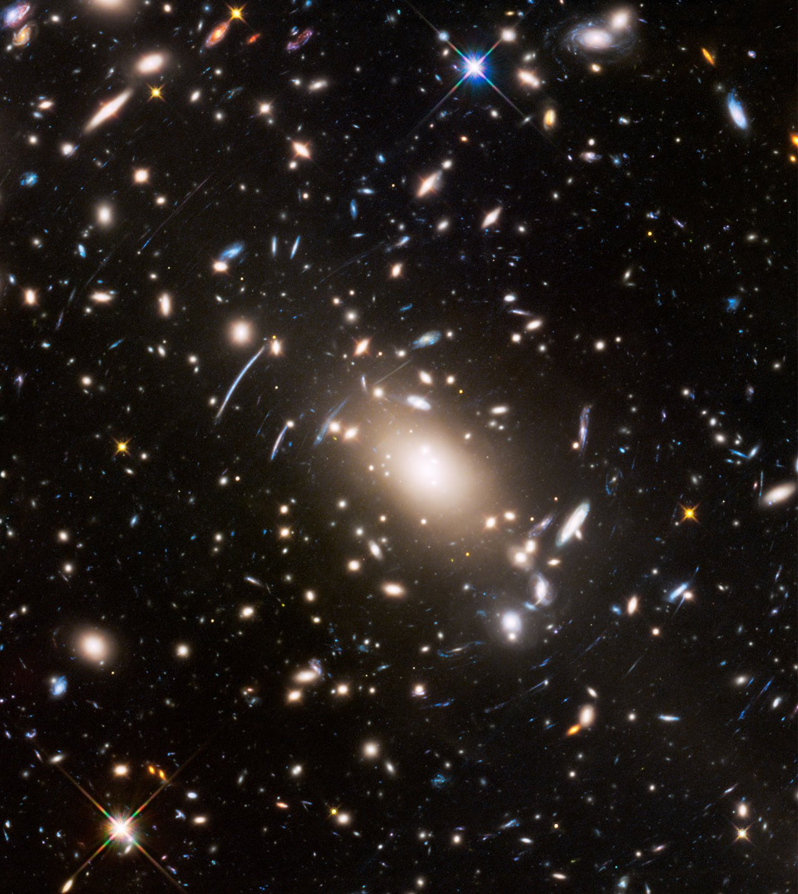

Bilde:NASA/ESA/J. Lotz (STScI)Forrige side🙂 🙁Mørk materie
 Man har også en helt uavhengig måte å måle massen til en galaksehop på ved å se på lysavbøyning av lys fra meget fjerne objekter som ligger langt bak galaksehopen. I bildet her er prikkene galakser i en galaksehop mens buene er det avbøyde lyset fra fjerne objekter. Lyset fra det fjerne objektet passerer gjennom hopen, men blir avbøyd på grunn av tyngdekrafta i galaksehopa. Ved å se på avbøyninga til lyset kan man ’veie’ galaksehopa og på den måten finne massen til hopa. Denne typen målinger bekrefter det som man finner ved andre metoder: Akkurat som enkeltgalaksene så innholder også galaksehopene mye mer masse enn den synlige massen. Neste side